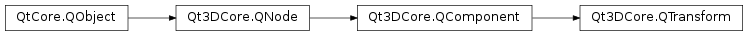

Qt3DCore.QTransform¶
Synopsis¶
Functions¶
Slots¶
- def
setMatrix(matrix) - def
setRotation(rotation) - def
setRotationX(rotationX) - def
setRotationY(rotationY) - def
setRotationZ(rotationZ) - def
setScale3D(scale) - def
setScale(scale) - def
setTranslation(translation)
Signals¶
- def
matrixChanged() - def
rotationChanged(rotation) - def
rotationXChanged(rotationX) - def
rotationYChanged(rotationY) - def
rotationZChanged(rotationZ) - def
scale3DChanged(scale) - def
scaleChanged(scale) - def
translationChanged(translation)
Static functions¶
- def
fromAxes(xAxis, yAxis, zAxis) - def
fromAxesAndAngles(axis1, angle1, axis2, angle2) - def
fromAxesAndAngles(axis1, angle1, axis2, angle2, axis3, angle3) - def
fromAxisAndAngle(axis, angle) - def
fromAxisAndAngle(x, y, z, angle) - def
fromEulerAngles(eulerAngles) - def
fromEulerAngles(pitch, yaw, roll) - def
rotateAround(point, angle, axis) - def
rotateFromAxes(xAxis, yAxis, zAxis)
Detailed Description¶
Used to perform transforms on meshes
The
PySide2.QtGui.QTransformcomponent is not shareable between multipleQEntity‘s. The transformation is held asPySide2.QtGui.QVector3Dscale,PySide2.QtGui.QQuaternionrotation andPySide2.QtGui.QVector3Dtranslation components. The transformations are applied to the mesh in that order. WhenQTransform.matrixproperty is set, it is decomposed to these transform components and corresponding signals are emitted.Several helper functions are provided to set up the
PySide2.QtGui.QTransform;fromAxisAndAngle()andfromAxesAndAngles()can be used to set the rotation around specific axes,fromEulerAngles()can be used to set the rotation based on euler angles androtateAround()can be used to rotate the object around specific point relative to local origin.
-
class
PySide2.Qt3DCore.Qt3DCore.QTransform([parent=nullptr])¶ Parameters: parent – PySide2.Qt3DCore.Qt3DCore::QNodeConstructs a new
PySide2.QtGui.QTransformwithparent.
-
static
PySide2.Qt3DCore.Qt3DCore.QTransform.fromAxes(xAxis, yAxis, zAxis)¶ Parameters: - xAxis –
PySide2.QtGui.QVector3D - yAxis –
PySide2.QtGui.QVector3D - zAxis –
PySide2.QtGui.QVector3D
Return type: Creates a QQuaterniom definining a rotation from the axes
xAxis,yAxisandzAxis.- xAxis –
-
static
PySide2.Qt3DCore.Qt3DCore.QTransform.fromAxesAndAngles(axis1, angle1, axis2, angle2, axis3, angle3)¶ Parameters: - axis1 –
PySide2.QtGui.QVector3D - angle1 –
PySide2.QtCore.float - axis2 –
PySide2.QtGui.QVector3D - angle2 –
PySide2.QtCore.float - axis3 –
PySide2.QtGui.QVector3D - angle3 –
PySide2.QtCore.float
Return type: Creates a
PySide2.QtGui.QQuaternionfromaxis1,angle1,axis2,angle2,axis3, andangle3. Returns the resultingPySide2.QtGui.QQuaternion.- axis1 –
-
static
PySide2.Qt3DCore.Qt3DCore.QTransform.fromAxesAndAngles(axis1, angle1, axis2, angle2) Parameters: - axis1 –
PySide2.QtGui.QVector3D - angle1 –
PySide2.QtCore.float - axis2 –
PySide2.QtGui.QVector3D - angle2 –
PySide2.QtCore.float
Return type: Creates a
PySide2.QtGui.QQuaternionfromaxis1,angle1,axis2, andangle2. Returns the resultingPySide2.QtGui.QQuaternion.- axis1 –
-
static
PySide2.Qt3DCore.Qt3DCore.QTransform.fromAxisAndAngle(axis, angle)¶ Parameters: - axis –
PySide2.QtGui.QVector3D - angle –
PySide2.QtCore.float
Return type: Creates a
PySide2.QtGui.QQuaternionfromaxisandangle. Returns the resultingPySide2.QtGui.QQuaternion.- axis –
-
static
PySide2.Qt3DCore.Qt3DCore.QTransform.fromAxisAndAngle(x, y, z, angle) Parameters: - x –
PySide2.QtCore.float - y –
PySide2.QtCore.float - z –
PySide2.QtCore.float - angle –
PySide2.QtCore.float
Return type: Creates a
PySide2.QtGui.QQuaternionfromx,y,z, andangle. Returns the resultingPySide2.QtGui.QQuaternion.- x –
-
static
PySide2.Qt3DCore.Qt3DCore.QTransform.fromEulerAngles(pitch, yaw, roll)¶ Parameters: - pitch –
PySide2.QtCore.float - yaw –
PySide2.QtCore.float - roll –
PySide2.QtCore.float
Return type: Creates a
PySide2.QtGui.QQuaternionfrompitch,yaw, androll. Returns the resultingPySide2.QtGui.QQuaternion.- pitch –
-
static
PySide2.Qt3DCore.Qt3DCore.QTransform.fromEulerAngles(eulerAngles) Parameters: eulerAngles – PySide2.QtGui.QVector3DReturn type: PySide2.QtGui.QQuaternionCreates a
PySide2.QtGui.QQuaternionfromeulerAngles. Returns the resultingPySide2.QtGui.QQuaternion.
-
PySide2.Qt3DCore.Qt3DCore.QTransform.matrix()¶ Return type: PySide2.QtGui.QMatrix4x4See also
PySide2.QtGui.QTransform.setMatrix()
-
PySide2.Qt3DCore.Qt3DCore.QTransform.matrixChanged()¶
-
static
PySide2.Qt3DCore.Qt3DCore.QTransform.rotateAround(point, angle, axis)¶ Parameters: - point –
PySide2.QtGui.QVector3D - angle –
PySide2.QtCore.float - axis –
PySide2.QtGui.QVector3D
Return type: Creates a rotation matrix from
axisandanglearoundpoint. Returns the resultingPySide2.QtGui.QMatrix4x4.- point –
-
static
PySide2.Qt3DCore.Qt3DCore.QTransform.rotateFromAxes(xAxis, yAxis, zAxis)¶ Parameters: - xAxis –
PySide2.QtGui.QVector3D - yAxis –
PySide2.QtGui.QVector3D - zAxis –
PySide2.QtGui.QVector3D
Return type: Returns a rotation matrix defined from the axes
xAxis,yAxis,zAxis.- xAxis –
-
PySide2.Qt3DCore.Qt3DCore.QTransform.rotation()¶ Return type: PySide2.QtGui.QQuaternionSee also
-
PySide2.Qt3DCore.Qt3DCore.QTransform.rotationChanged(rotation)¶ Parameters: rotation – PySide2.QtGui.QQuaternion
-
PySide2.Qt3DCore.Qt3DCore.QTransform.rotationX()¶ Return type: PySide2.QtCore.floatSee also
-
PySide2.Qt3DCore.Qt3DCore.QTransform.rotationXChanged(rotationX)¶ Parameters: rotationX – PySide2.QtCore.float
-
PySide2.Qt3DCore.Qt3DCore.QTransform.rotationY()¶ Return type: PySide2.QtCore.floatSee also
-
PySide2.Qt3DCore.Qt3DCore.QTransform.rotationYChanged(rotationY)¶ Parameters: rotationY – PySide2.QtCore.float
-
PySide2.Qt3DCore.Qt3DCore.QTransform.rotationZ()¶ Return type: PySide2.QtCore.floatSee also
-
PySide2.Qt3DCore.Qt3DCore.QTransform.rotationZChanged(rotationZ)¶ Parameters: rotationZ – PySide2.QtCore.float
-
PySide2.Qt3DCore.Qt3DCore.QTransform.scale()¶ Return type: PySide2.QtCore.floatSee also
-
PySide2.Qt3DCore.Qt3DCore.QTransform.scale3D()¶ Return type: PySide2.QtGui.QVector3DSee also
-
PySide2.Qt3DCore.Qt3DCore.QTransform.scale3DChanged(scale)¶ Parameters: scale – PySide2.QtGui.QVector3D
-
PySide2.Qt3DCore.Qt3DCore.QTransform.scaleChanged(scale)¶ Parameters: scale – PySide2.QtCore.float
-
PySide2.Qt3DCore.Qt3DCore.QTransform.setMatrix(matrix)¶ Parameters: matrix – PySide2.QtGui.QMatrix4x4See also
-
PySide2.Qt3DCore.Qt3DCore.QTransform.setRotation(rotation)¶ Parameters: rotation – PySide2.QtGui.QQuaternionSee also
-
PySide2.Qt3DCore.Qt3DCore.QTransform.setRotationX(rotationX)¶ Parameters: rotationX – PySide2.QtCore.floatSee also
-
PySide2.Qt3DCore.Qt3DCore.QTransform.setRotationY(rotationY)¶ Parameters: rotationY – PySide2.QtCore.floatSee also
-
PySide2.Qt3DCore.Qt3DCore.QTransform.setRotationZ(rotationZ)¶ Parameters: rotationZ – PySide2.QtCore.floatSee also
-
PySide2.Qt3DCore.Qt3DCore.QTransform.setScale(scale)¶ Parameters: scale – PySide2.QtCore.floatSee also
PySide2.QtGui.QTransform.scale()
-
PySide2.Qt3DCore.Qt3DCore.QTransform.setScale3D(scale)¶ Parameters: scale – PySide2.QtGui.QVector3DSee also
-
PySide2.Qt3DCore.Qt3DCore.QTransform.setTranslation(translation)¶ Parameters: translation – PySide2.QtGui.QVector3DSee also
-
PySide2.Qt3DCore.Qt3DCore.QTransform.translation()¶ Return type: PySide2.QtGui.QVector3DSee also
-
PySide2.Qt3DCore.Qt3DCore.QTransform.translationChanged(translation)¶ Parameters: translation – PySide2.QtGui.QVector3D
© 2018 The Qt Company Ltd. Documentation contributions included herein are the copyrights of their respective owners. The documentation provided herein is licensed under the terms of the GNU Free Documentation License version 1.3 as published by the Free Software Foundation. Qt and respective logos are trademarks of The Qt Company Ltd. in Finland and/or other countries worldwide. All other trademarks are property of their respective owners.